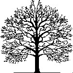

| |
PIS TRE�CI : |
|
Genealogia RodzinyCZAKOW W dniu 22 maja 2006 r. zmar� JULIAN CZAKOW
 �.P. JULIAN CZAKOW urodzi � si� 16 lutego 1918 roku w Sosnowcu w rodzinie inteligenckiej.Przed drug � Wojn� �wiatow� uko�czy� gimnazjum humanistyczne w Sosnowcu i jako bardzo zdolny ucze� otrzymawszy stypendium z fabryki Babkock – Zielenieski rozpocz�� studia na Politechnice Warszawskiej na wydziale chemii. W czasie wojny pracowa� w fabryce jako kre�larz , a tak�e prowadzi� r�wnie� kursy tajnego nauczania.Po wojnie doko �czy� studia na Politechnice Gliwickiej. W 1948 roku o �eni� si� z Zofi� Zar�d , a w 1954 roku – profesor Andrzej So�tan �ci�gn�� Go do Warszawy – do powstaj�cego Instytutu Bada� J�drowych. W 1961 roku obroni� prac� doktorsk�. Przez ponad 40 – lat swojej pracy naukowo- badawczej opublikowa� mn�stwo dzie� z chemii w zakresie analizy spektralnej. By� autorem szeregu patent�w i wynalazk�w mi�dzy innymi – zimnej lampy jarzeniowej i katody wn�kowej. Jako docent - doktor habilitowany - in�ynier by� bardzo cenionym i uznawanym naukowcem w �wiecie nauki . Pracowa� r�wnie� w Mi�dzynarodowej Agencji Atomowej przy ONZ we Wiedniu . By� tak�e ekspertem i konsultantem w Zak�adzie Medycyny S�dowej w Krakowie oraz w Zak�adzie Kryminalistyki w Warszawie . Jego publikacje , r�wnie� w s�ownikach i w encyklopediach , s� po dzie� dzisiejszy rozpowszechniane w �wiecie. Otrzyma� szereg odznacze� mi�dzy innymi : Nagrod� Pa�stwow� Pierwszego Stopnia , Z�oty Krzy� Zas�ugi , a tak�e mn�stwo odznacze� pa�stwowych za zas�ugi w dziedzinie chemii analitycznej - analizy spektralnej .Mia � syna – Janusza i c�rk� – Barbar� , wnuczki – Kasi� , Agnieszk� , Ole�k� i prawnuki – Micha�ka i Mateuszka .By � cz�owiekiem niezwykle spokojnym , cierpliwym i wyrozumia�ym. Potrafia � wybacza� nawet tym , kt�rzy Go ranili.Przekazywa � i naucza� swoje dzieci , wnuczki i prawnuki – szacunku , kultury i mi�o�ci do bli�niego.By � osob� bardzo rodzinn� i towarzysk� – kochan� , szanowan� i bardzo cenion� w gronie rodziny , przyjaci� i znajomych .By � bardzo wierz�cym i gorliwym katolikiem . Swoje �ycie ca�kowicie zawierzy� Matce Boskiej . Codziennie otrzymywa� i do�wiadcza� od Niej �ask i pomocy .Jego mi �o�� do Boga , ludzi i przyrody – by�a widoczna ka�dego dnia.Ka �dy z nas czego� si� nauczy� od Naszego Kochanego – Juliana.
 Spok�j Jego duszy

| |